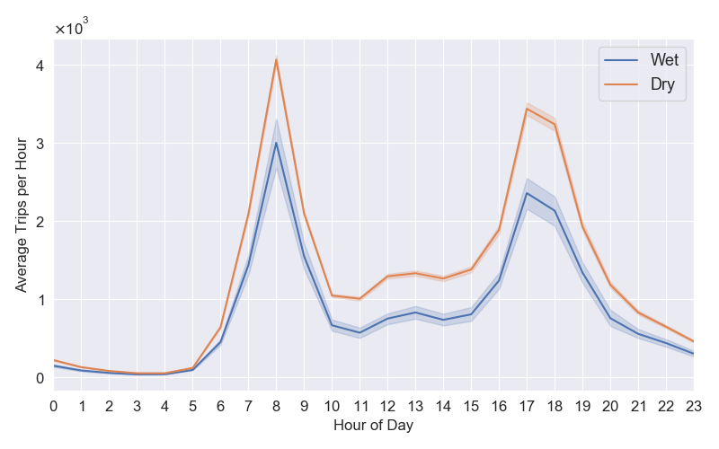
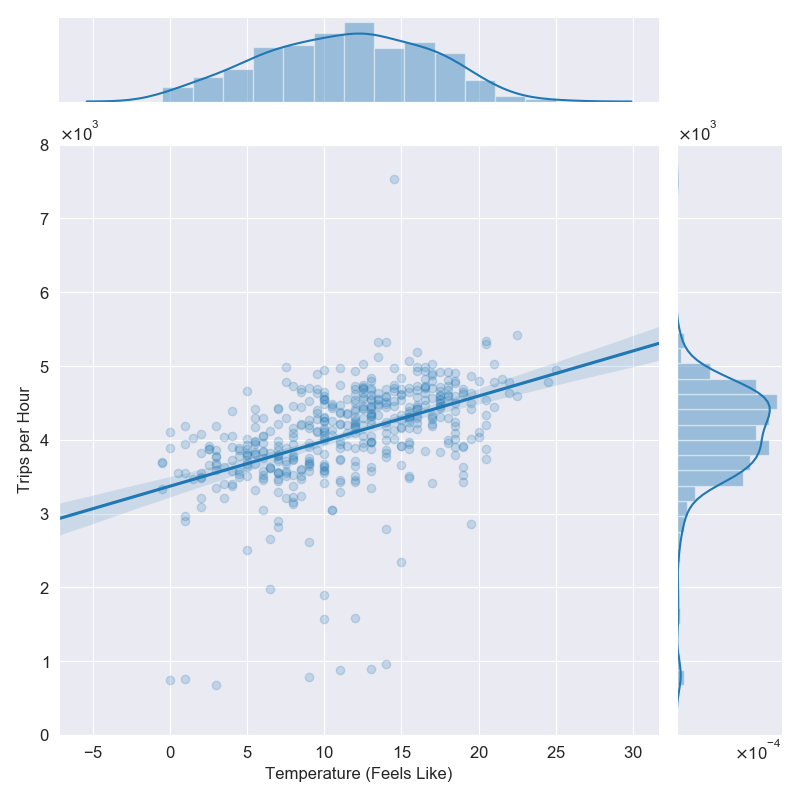

Automate Scientific Plots and Tables with Python and Make
2020-01-24
A common task of scientific projects is creating plots and tables to visualise data and adding these plots and tables to some output document, for example a paper, thesis or slide deck. In a typical workflow, we might have some input data which is processed by Python scripts and output in image files. These images are then referenced in a TeX file to be rendered as a PDF.
When you start working on projects like this, all of these steps will likely be manual. What happens if the data is updated? You have to re-run the plot scripts, remembering the right commands to run and subtleties of the environment in which they will run successfully. Then you manually save the plots into a folder. Then you manually copy them into another folder to be referenced from the TeX file. Then you manually re-run the TeX renderer. All these manual steps multiply the potential for errors and for reproducibility to be broken if you forget to document every step exactly. This is where someone comes to you six months later because they can’t reproduce the output and you say ‘Oh, I forgot to say this package has to be installed’ or ‘Oh, I forgot to say you need x added to the y environment variable for that to work.’ And that someone in six months is most likely to be you.
We solve this by writing the steps down exactly. The most well-used tool for this kind of thing is make. You might think of make as a tool for building code, but really it is a tool for expressing dependencies of files — it is perfect for automating tasks like this.1 I’m going to illustrate how I typically do this kind of thing in a demo project with a Makefile and I’ll go through the steps here. The demo project is on GitHub, including the rendered outputs. The particular dataset and analysis here is not important, it’s just to have something to demo. We’re looking at Transport for London’s cycle hire usage data aggregated in this Kaggle dataset.
Another Plot, Another Planet
The plots we’re going to produce in this project are written as Python scripts using matplotlib. We’ll put all plot scripts in a src/plots folder. In there, every plot script is prefixed with plot_. In our demo project we have
src/plots/
+--plot_daily_journeys.py
+--plot_trips_vs_temp.pyI strongly recommend you have one script for every one plot you want to show in the final outputs. Even if the script is exactly the same apart from a parameter or two. This will often mean a lot of repeat code, which you would usually want to avoid by abstraction. Resist the urge! In data visualisation you want to tailor each plot precisely, even if it’s just something like the location of a legend or some axis ticks. One script, one plot.
The plot scripts all get boilerplate code at the top to parse arguments we’re going to pass in at the command line.
parser = argparse.ArgumentParser(description="Plotting script.")
parser.add_argument('--pdf', default=False, action="store_true",
help="Output PDF file.")
parser.add_argument('--png', default=False, action="store_true",
help="Output PNG file.")
parser.add_argument("--show", default=False, action="store_true",
help="Show plot in GUI.")
opts, unknown = parser.parse_known_args()
print('opts:', opts)They get matching boilerplate at the bottom to output based on those arguments.
# Get the filename of this script without extension.
path_no_ext = os.path.splitext(sys.argv[0])[0]
if opts.pdf:
plt.savefig(path_no_ext + '.pdf')
if opts.png:
plt.savefig(path_no_ext + '.png')
if opts.show:
plt.show()So for example the command python src/plots/plot_daily_journeys.py --pdf --show will both write the output plot to src/plots/plot_daily_journeys.pdf and show the plot in a GUI window for you to check.
In this demo, we have two plots. First, plot_daily_journeys.py plots the average number of weekday bike trips by hour of the day, in wet and dry weather. Do more people cycle when it’s dry? When in the day do they hire bikes?

plot_daily_journeys.py.And second, plot_trips_vs_temp.py plots the number of cycle trips between 08:00 and 09:00 for each weekday in the period the data was collected, vs the feels-like temperature at the time. Do more people hire bikes when it feels warmer?

plot_trips_vs_temp.py.Now we’ll look at how we automate this in the Makefile. First we set the plots directory as a variable.
PLOTS_DIR = src/plots/Next we specify that all of the plot scripts are of the form plot_*.py, and that the matching outputs are plot_*.png for PNG files and plot_*.pdf for PDFs.2
PLOTS_PY = $(wildcard $(PLOTS_DIR)plot_*.py)
PLOTS_PDF = $(PLOTS_PY:.py=.pdf)
PLOTS_PNG = $(PLOTS_PY:.py=.png)Now we need to tell make the recipe that turns .py files in to .png and .pdf files.
$(PLOTS_DIR)%.pdf: $(PLOTS_DIR)%.py
python $< --pdf $(PLOTS_FLAGS)
$(PLOTS_DIR)%.png: $(PLOTS_DIR)%.py
python $< --png $(PLOTS_FLAGS)Here $< is an automatic variable that takes the name of the first prerequisite, in this case the python script.
The variable PLOTS_FLAGS contains any extra flags we want to pass to every plotting script. We’ll look at that later. Now we add recipes to produce all the plots.
plots_pdf: $(PLOTS_PDF)
plots_png: $(PLOTS_PNG)
plots: plots_pdf plots_pngSo then make plots_pdf will output all of the plot PDFs and make plots will output all formats. Note that make checks modified timestamps for dependencies and only updates what it needs to, so if you update only one script only that one will be re-run.
Producing Reports
You’ll usually have a separate folder for the documents you want to output, here we’re going to have two outputs, a paper and a slide deck, both to be produced using LaTeX. I put the source for these in reports/. I want the plots to be copied into a subfolder here to make the reports self-contained, so we write a rule to copy the PDF plots across.
FIGS_DIR = reports/figs/
# Take the pdfs in PLOTS_PDF and change the path from PLOTS_DIR to FIGS_DIR
REPORT_FIGS_PDF = $(patsubst $(PLOTS_DIR)%, $(FIGS_DIR)%, $(PLOTS_PDF))
# Copy figures
$(FIGS_DIR)%.pdf: $(PLOTS_DIR)%.pdf
cp -f $< $(FIGS_DIR)
report_figs_pdf: $(REPORT_FIGS_PDF) plots_pdfAfter running make report_figs_pdf we have the following substructure.
reports/
+--paper.tex
+--slides.tex
+--figs/
+--plot_daily_journeys.pdf
+--plot_trips_vs_temp.pdfNow we make the reports, where .tex files are turned into .pdf files.
REPORTS_TEX = $(wildcard $(REPORTS_DIR)*.tex)
REPORTS_PDF = $(REPORTS_TEX:.tex=.pdf)
$(REPORTS_DIR)%.pdf: $(REPORTS_DIR)%.tex
pushd $(REPORTS_DIR); pdflatex $(<F); popd
paper: $(REPORTS_DIR)paper.pdf
slides: $(REPORTS_DIR)slides.pdf
reports_pdf: $(REPORTS_PDF)Now make paper will do everything needed to create the paper, including updating the plots if needed, and make slides will do the same for the slide deck. The make command alone builds everything. You can view the output paper.pdf and slides.pdf in the repo.
We’re All Waving Flags Now
Another useful thing in using make for plots in this way is that you can pass in parameters you want to be consistent across all plots as additional flags. In this project I might wish to filter for bike journeys between a given start and end date. But if I do that I want the filtering to be consistent across my plots. So I added these flags to the parser in each script.
parser.add_argument("--start", default='2015-01-04', help="Start date.",
type=str)
parser.add_argument("--end", default='2017-01-03', help="End date.",
type=str)Now if I want to filter for a date range on all plots I set the flags.
PLOTS_FLAGS = --start 2015-01-04 --end 2017-01-03 --texNotice how I also have a --tex flag? I want to render the plot text in TeX for production but it is slow when I’m working on the plots. By adding a switch on each script I can easily turn TeX rendering on and off all of them in one go.
if opts.tex:
matplotlib.rcParams['text.usetex'] = TrueTables
I recommend automating table output in the same way. Did you know Pandas can output dataframes to LaTeX tabular format with DataFrame.to_latex? This has some big advantages over manually produced tables: - We avoid digit transcription errors. Copy-pasting numbers is dangerous! - We improve scientific reproducibility. Where is that number from? Follow the code. - We can quickly do things like adjust the number of decimal places we want to output or consistently adjust parameters of the analysis like the start and end dates here.
The table rules for the Makefile are so similar to the plot ones I’m not going to write them out, you can see for yourself in the demo project. Again I strongly recommend one table, one script.
Summary
You should automate your scientific data visualisation with plots and tables to reduce errors and improve reproducibility. A great tool for this is make. The demo project for this blogpost has a Makefile and scripts to produce the plots and tables rendered in the output documents. Take a look at the code, download and run it, and feel free to use any of it in your own projects.
Footnotes
This is not a guide to
make. You’ll find those elsewhere.↩︎When I’m working on a plot I’ll prefix it
WIP_plot_[…].pyso it doesn’t get picked up by themakejobs and also sits at the bottom of the folder.↩︎